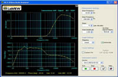

National Instument's ELVIS(Educational Laboratory Virtual Instrumentation Suite) II is a virtual lab, in which you have a breadboard having a data acquisition system and its output is connect to a computer. The computer has a virtual multimeter, oscilloscope, waveform generator, bode analyzer, signal analyzer and many other virtual instruments.
So we had done a project in which we did around 15 experiments exploring various features of ELVIS II and made a report. The experiments were on Basic Electronic Circuits like Clipper, Clamper, Op-Amp and some were on Basic Telecommunication circuits like FM and AM.
Along with this, we also used the NI LabView Software. The ELVIS hardware was recenlty released and not much documentation was available and hence we prepared and tested experiements on it.
The image on left shows the ciruit of High Pass Filter made on ELVIS board and its correspoding output in the virtual instument.
 |
 |